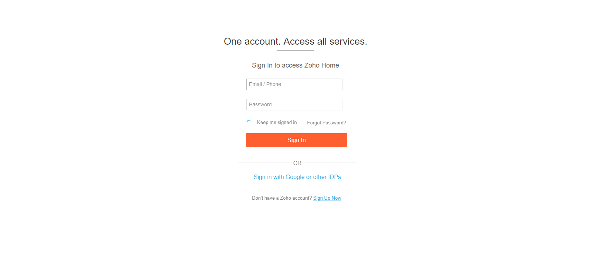

| Status | Timestamp | Details |
|---|---|---|
| info_outline | 4:16:58 PM | Launched Browser : firefox |
| info_outline | 4:17:14 PM | Clicking on the element : Login Button |
| info_outline | 4:17:15 PM | Typing in the element : User Name and entered value is : java@way2automation.com |
| info_outline | 4:17:15 PM | Typing in the element : Password and entered value is : Selenium@1234 |
| info_outline | 4:17:16 PM | Clicking on the element : Submit Button |
| info_outline | 4:17:16 PM | Username entered as : java@way2automation.com and password entered as : Selenium@1234 |
| check_circle | 4:17:16 PM | TEST CASE:- LOGINTEST PASSED |
| info_outline | 4:17:16 PM | Test Completed !! |
| Status | Timestamp | Details |
|---|---|---|
| info_outline | 4:16:51 PM | Launched Browser : chrome |
| cancel | 4:17:18 PM | Exception Occured: |
| cancel | 4:17:18 PM | org.openqa.selenium.StaleElementReferenceException: stale element reference: element is not attached to the page document
(Session info: chrome=71.0.3578.98)
(Driver info: chromedriver=2.45.615291 (ec3682e3c9061c10f26ea9e5cdcf3c53f3f74387),platform=Windows NT 10.0.15063 x86_64) (WARNING: The server did not provide any stacktrace information)
Command duration or timeout: 0 milliseconds
For documentation on this error, please visit: https://www.seleniumhq.org/exceptions/stale_element_reference.html
Build info: version: '3.141.59', revision: 'e82be7d358', time: '2018-11-14T08:17:03'
System info: host: 'IN2070121W2', ip: '192.168.99.1', os.name: 'Windows 10', os.arch: 'amd64', os.version: '10.0', java.version: '1.8.0_171'
Driver info: org.openqa.selenium.chrome.ChromeDriver
Capabilities {acceptInsecureCerts: false, acceptSslCerts: false, applicationCacheEnabled: false, browserConnectionEnabled: false, browserName: chrome, chrome: {chromedriverVersion: 2.45.615291 (ec3682e3c9061c..., userDataDir: C:\Users\SATYAR~1.MUD\AppDa...}, cssSelectorsEnabled: true, databaseEnabled: false, goog:chromeOptions: {debuggerAddress: localhost:59406}, handlesAlerts: true, hasTouchScreen: false, javascriptEnabled: true, locationContextEnabled: true, mobileEmulationEnabled: false, nativeEvents: true, networkConnectionEnabled: false, pageLoadStrategy: normal, platform: XP, platformName: XP, proxy: Proxy(), rotatable: false, setWindowRect: true, strictFileInteractability: false, takesHeapSnapshot: true, takesScreenshot: true, timeouts: {implicit: 0, pageLoad: 300000, script: 30000}, unexpectedAlertBehaviour: ignore, unhandledPromptBehavior: ignore, version: 71.0.3578.98, webStorageEnabled: true}
Session ID: 105a1c03491991e7161f265fa5fcd832
at sun.reflect.NativeConstructorAccessorImpl.newInstance0(Native Method)
at sun.reflect.NativeConstructorAccessorImpl.newInstance(NativeConstructorAccessorImpl.java:62)
at sun.reflect.DelegatingConstructorAccessorImpl.newInstance(DelegatingConstructorAccessorImpl.java:45)
at java.lang.reflect.Constructor.newInstance(Constructor.java:423)
at org.openqa.selenium.remote.ErrorHandler.createThrowable(ErrorHandler.java:214)
at org.openqa.selenium.remote.ErrorHandler.throwIfResponseFailed(ErrorHandler.java:166)
at org.openqa.selenium.remote.http.JsonHttpResponseCodec.reconstructValue(JsonHttpResponseCodec.java:40)
at org.openqa.selenium.remote.http.AbstractHttpResponseCodec.decode(AbstractHttpResponseCodec.java:80)
at org.openqa.selenium.remote.http.AbstractHttpResponseCodec.decode(AbstractHttpResponseCodec.java:44)
at org.openqa.selenium.remote.HttpCommandExecutor.execute(HttpCommandExecutor.java:158)
at org.openqa.selenium.remote.service.DriverCommandExecutor.execute(DriverCommandExecutor.java:83)
at org.openqa.selenium.remote.RemoteWebDriver.execute(RemoteWebDriver.java:552)
at org.openqa.selenium.remote.RemoteWebElement.execute(RemoteWebElement.java:285)
at org.openqa.selenium.remote.RemoteWebElement.click(RemoteWebElement.java:84)
at sun.reflect.NativeMethodAccessorImpl.invoke0(Native Method)
at sun.reflect.NativeMethodAccessorImpl.invoke(NativeMethodAccessorImpl.java:62)
at sun.reflect.DelegatingMethodAccessorImpl.invoke(DelegatingMethodAccessorImpl.java:43)
at java.lang.reflect.Method.invoke(Method.java:498)
at org.openqa.selenium.support.pagefactory.internal.LocatingElementHandler.invoke(LocatingElementHandler.java:51)
at com.sun.proxy.$Proxy10.click(Unknown Source)
at com.qa.pageobjects.BasePage.click(BasePage.java:58)
at com.qa.pageobjects.ZohoHomePage.goToLogin(ZohoHomePage.java:37)
at com.qa.testcases.LoginTest.loginTest(LoginTest.java:36)
at sun.reflect.NativeMethodAccessorImpl.invoke0(Native Method)
at sun.reflect.NativeMethodAccessorImpl.invoke(NativeMethodAccessorImpl.java:62)
at sun.reflect.DelegatingMethodAccessorImpl.invoke(DelegatingMethodAccessorImpl.java:43)
at java.lang.reflect.Method.invoke(Method.java:498)
at org.testng.internal.MethodInvocationHelper.invokeMethod(MethodInvocationHelper.java:124)
at org.testng.internal.Invoker.invokeMethod(Invoker.java:583)
at org.testng.internal.Invoker.invokeTestMethod(Invoker.java:719)
at org.testng.internal.TestMethodWithDataProviderMethodWorker.call(TestMethodWithDataProviderMethodWorker.java:71)
at org.testng.internal.TestMethodWithDataProviderMethodWorker.call(TestMethodWithDataProviderMethodWorker.java:14)
at java.util.concurrent.FutureTask.run(FutureTask.java:266)
at java.util.concurrent.Executors$RunnableAdapter.call(Executors.java:511)
at java.util.concurrent.FutureTask.run(FutureTask.java:266)
at java.util.concurrent.ThreadPoolExecutor.runWorker(ThreadPoolExecutor.java:1149)
at java.util.concurrent.ThreadPoolExecutor$Worker.run(ThreadPoolExecutor.java:624)
at java.lang.Thread.run(Thread.java:748)
|
| cancel | 4:17:19 PM | Screenshot of failure |
| cancel | 4:17:19 PM | TEST CASE FAILED |
| info_outline | 4:17:19 PM | Test Completed !! |
| Status | Timestamp | Details |
|---|---|---|
| info_outline | 4:16:51 PM | Launched Browser : chrome |
| info_outline | 4:17:18 PM | Clicking on the element : Login Button |
| info_outline | 4:17:20 PM | Typing in the element : User Name and entered value is : corporate@way2automation.com |
| cancel | 4:17:24 PM | Exception Occured: |
| cancel | 4:17:24 PM | org.openqa.selenium.WebDriverException: java.net.ConnectException: Failed to connect to localhost/0:0:0:0:0:0:0:1:44959 Build info: version: '3.141.59', revision: 'e82be7d358', time: '2018-11-14T08:17:03' System info: host: 'IN2070121W2', ip: '192.168.99.1', os.name: 'Windows 10', os.arch: 'amd64', os.version: '10.0', java.version: '1.8.0_171' Driver info: driver.version: RemoteWebDriver at org.openqa.selenium.remote.service.DriverCommandExecutor.execute(DriverCommandExecutor.java:92) at org.openqa.selenium.remote.RemoteWebDriver.execute(RemoteWebDriver.java:552) at org.openqa.selenium.remote.RemoteWebDriver.findElement(RemoteWebDriver.java:323) at org.openqa.selenium.remote.RemoteWebDriver.findElementById(RemoteWebDriver.java:372) at org.openqa.selenium.By$ById.findElement(By.java:188) at org.openqa.selenium.remote.RemoteWebDriver.findElement(RemoteWebDriver.java:315) at org.openqa.selenium.support.pagefactory.DefaultElementLocator.findElement(DefaultElementLocator.java:69) at org.openqa.selenium.support.pagefactory.AjaxElementLocator.access$001(AjaxElementLocator.java:39) at org.openqa.selenium.support.pagefactory.AjaxElementLocator$SlowLoadingElement.isLoaded(AjaxElementLocator.java:165) at org.openqa.selenium.support.ui.SlowLoadableComponent.get(SlowLoadableComponent.java:51) at org.openqa.selenium.support.pagefactory.AjaxElementLocator.findElement(AjaxElementLocator.java:95) at org.openqa.selenium.support.pagefactory.internal.LocatingElementHandler.invoke(LocatingElementHandler.java:38) at com.sun.proxy.$Proxy10.sendKeys(Unknown Source) at com.qa.pageobjects.BasePage.typing(BasePage.java:64) at com.qa.pageobjects.ZohoLoginPage.doLogin(ZohoLoginPage.java:41) at com.qa.testcases.LoginTest.loginTest(LoginTest.java:37) at sun.reflect.NativeMethodAccessorImpl.invoke0(Native Method) at sun.reflect.NativeMethodAccessorImpl.invoke(NativeMethodAccessorImpl.java:62) at sun.reflect.DelegatingMethodAccessorImpl.invoke(DelegatingMethodAccessorImpl.java:43) at java.lang.reflect.Method.invoke(Method.java:498) at org.testng.internal.MethodInvocationHelper.invokeMethod(MethodInvocationHelper.java:124) at org.testng.internal.Invoker.invokeMethod(Invoker.java:583) at org.testng.internal.Invoker.invokeTestMethod(Invoker.java:719) at org.testng.internal.TestMethodWithDataProviderMethodWorker.call(TestMethodWithDataProviderMethodWorker.java:71) at org.testng.internal.TestMethodWithDataProviderMethodWorker.call(TestMethodWithDataProviderMethodWorker.java:14) at java.util.concurrent.FutureTask.run(FutureTask.java:266) at java.util.concurrent.Executors$RunnableAdapter.call(Executors.java:511) at java.util.concurrent.FutureTask.run(FutureTask.java:266) at java.util.concurrent.ThreadPoolExecutor.runWorker(ThreadPoolExecutor.java:1149) at java.util.concurrent.ThreadPoolExecutor$Worker.run(ThreadPoolExecutor.java:624) at java.lang.Thread.run(Thread.java:748) Caused by: java.net.ConnectException: Failed to connect to localhost/0:0:0:0:0:0:0:1:44959 at okhttp3.internal.connection.RealConnection.connectSocket(RealConnection.java:247) at okhttp3.internal.connection.RealConnection.connect(RealConnection.java:165) at okhttp3.internal.connection.StreamAllocation.findConnection(StreamAllocation.java:257) at okhttp3.internal.connection.StreamAllocation.findHealthyConnection(StreamAllocation.java:135) at okhttp3.internal.connection.StreamAllocation.newStream(StreamAllocation.java:114) at okhttp3.internal.connection.ConnectInterceptor.intercept(ConnectInterceptor.java:42) at okhttp3.internal.http.RealInterceptorChain.proceed(RealInterceptorChain.java:147) at okhttp3.internal.http.RealInterceptorChain.proceed(RealInterceptorChain.java:121) at okhttp3.internal.cache.CacheInterceptor.intercept(CacheInterceptor.java:93) at okhttp3.internal.http.RealInterceptorChain.proceed(RealInterceptorChain.java:147) at okhttp3.internal.http.RealInterceptorChain.proceed(RealInterceptorChain.java:121) at okhttp3.internal.http.BridgeInterceptor.intercept(BridgeInterceptor.java:93) at okhttp3.internal.http.RealInterceptorChain.proceed(RealInterceptorChain.java:147) at okhttp3.internal.http.RetryAndFollowUpInterceptor.intercept(RetryAndFollowUpInterceptor.java:126) at okhttp3.internal.http.RealInterceptorChain.proceed(RealInterceptorChain.java:147) at okhttp3.internal.http.RealInterceptorChain.proceed(RealInterceptorChain.java:121) at okhttp3.RealCall.getResponseWithInterceptorChain(RealCall.java:200) at okhttp3.RealCall.execute(RealCall.java:77) at org.openqa.selenium.remote.internal.OkHttpClient.execute(OkHttpClient.java:103) at org.openqa.selenium.remote.HttpCommandExecutor.execute(HttpCommandExecutor.java:155) at org.openqa.selenium.remote.service.DriverCommandExecutor.execute(DriverCommandExecutor.java:83) ... 30 more Caused by: java.net.ConnectException: Connection refused: connect at java.net.DualStackPlainSocketImpl.waitForConnect(Native Method) at java.net.DualStackPlainSocketImpl.socketConnect(DualStackPlainSocketImpl.java:85) at java.net.AbstractPlainSocketImpl.doConnect(AbstractPlainSocketImpl.java:350) at java.net.AbstractPlainSocketImpl.connectToAddress(AbstractPlainSocketImpl.java:206) at java.net.AbstractPlainSocketImpl.connect(AbstractPlainSocketImpl.java:188) at java.net.PlainSocketImpl.connect(PlainSocketImpl.java:172) at java.net.SocksSocketImpl.connect(SocksSocketImpl.java:392) at java.net.Socket.connect(Socket.java:589) at okhttp3.internal.platform.Platform.connectSocket(Platform.java:129) at okhttp3.internal.connection.RealConnection.connectSocket(RealConnection.java:245) ... 50 more |
| Timestamp | TestName | Status |
|---|---|---|
| Jan 21, 2019 04:16:34 PM | com.qa.testcases.LoginTest @TestCase : loginTest | |
| Timestamp | TestName | Status |
|---|---|---|
| Jan 21, 2019 04:16:34 PM | com.qa.testcases.LoginTest @TestCase : loginTest | org.openqa.selenium.WebDriverException: java.net.ConnectException: Failed to connect to localhost/0:0:0:0:0:0:0:1:44959 Build info: version: '3.141.59', revision: 'e82be7d358', time: '2018-11-14T08:17:03' System info: host: 'IN2070121W2', ip: '192.168.99.1', os.name: 'Windows 10', os.arch: 'amd64', os.version: '10.0', java.version: '1.8.0_171' Driver info: driver.version: RemoteWebDriver at org.openqa.selenium.remote.service.DriverCommandExecutor.execute(DriverCommandExecutor.java:92) at org.openqa.selenium.remote.RemoteWebDriver.execute(RemoteWebDriver.java:552) at org.openqa.selenium.remote.RemoteWebDriver.findElement(RemoteWebDriver.java:323) at org.openqa.selenium.remote.RemoteWebDriver.findElementById(RemoteWebDriver.java:372) at org.openqa.selenium.By$ById.findElement(By.java:188) at org.openqa.selenium.remote.RemoteWebDriver.findElement(RemoteWebDriver.java:315) at org.openqa.selenium.support.pagefactory.DefaultElementLocator.findElement(DefaultElementLocator.java:69) at org.openqa.selenium.support.pagefactory.AjaxElementLocator.access$001(AjaxElementLocator.java:39) at org.openqa.selenium.support.pagefactory.AjaxElementLocator$SlowLoadingElement.isLoaded(AjaxElementLocator.java:165) at org.openqa.selenium.support.ui.SlowLoadableComponent.get(SlowLoadableComponent.java:51) at org.openqa.selenium.support.pagefactory.AjaxElementLocator.findElement(AjaxElementLocator.java:95) at org.openqa.selenium.support.pagefactory.internal.LocatingElementHandler.invoke(LocatingElementHandler.java:38) at com.sun.proxy.$Proxy10.sendKeys(Unknown Source) at com.qa.pageobjects.BasePage.typing(BasePage.java:64) at com.qa.pageobjects.ZohoLoginPage.doLogin(ZohoLoginPage.java:41) at com.qa.testcases.LoginTest.loginTest(LoginTest.java:37) at sun.reflect.NativeMethodAccessorImpl.invoke0(Native Method) at sun.reflect.NativeMethodAccessorImpl.invoke(NativeMethodAccessorImpl.java:62) at sun.reflect.DelegatingMethodAccessorImpl.invoke(DelegatingMethodAccessorImpl.java:43) at java.lang.reflect.Method.invoke(Method.java:498) at org.testng.internal.MethodInvocationHelper.invokeMethod(MethodInvocationHelper.java:124) at org.testng.internal.Invoker.invokeMethod(Invoker.java:583) at org.testng.internal.Invoker.invokeTestMethod(Invoker.java:719) at org.testng.internal.TestMethodWithDataProviderMethodWorker.call(TestMethodWithDataProviderMethodWorker.java:71) at org.testng.internal.TestMethodWithDataProviderMethodWorker.call(TestMethodWithDataProviderMethodWorker.java:14) at java.util.concurrent.FutureTask.run(FutureTask.java:266) at java.util.concurrent.Executors$RunnableAdapter.call(Executors.java:511) at java.util.concurrent.FutureTask.run(FutureTask.java:266) at java.util.concurrent.ThreadPoolExecutor.runWorker(ThreadPoolExecutor.java:1149) at java.util.concurrent.ThreadPoolExecutor$Worker.run(ThreadPoolExecutor.java:624) at java.lang.Thread.run(Thread.java:748) Caused by: java.net.ConnectException: Failed to connect to localhost/0:0:0:0:0:0:0:1:44959 at okhttp3.internal.connection.RealConnection.connectSocket(RealConnection.java:247) at okhttp3.internal.connection.RealConnection.connect(RealConnection.java:165) at okhttp3.internal.connection.StreamAllocation.findConnection(StreamAllocation.java:257) at okhttp3.internal.connection.StreamAllocation.findHealthyConnection(StreamAllocation.java:135) at okhttp3.internal.connection.StreamAllocation.newStream(StreamAllocation.java:114) at okhttp3.internal.connection.ConnectInterceptor.intercept(ConnectInterceptor.java:42) at okhttp3.internal.http.RealInterceptorChain.proceed(RealInterceptorChain.java:147) at okhttp3.internal.http.RealInterceptorChain.proceed(RealInterceptorChain.java:121) at okhttp3.internal.cache.CacheInterceptor.intercept(CacheInterceptor.java:93) at okhttp3.internal.http.RealInterceptorChain.proceed(RealInterceptorChain.java:147) at okhttp3.internal.http.RealInterceptorChain.proceed(RealInterceptorChain.java:121) at okhttp3.internal.http.BridgeInterceptor.intercept(BridgeInterceptor.java:93) at okhttp3.internal.http.RealInterceptorChain.proceed(RealInterceptorChain.java:147) at okhttp3.internal.http.RetryAndFollowUpInterceptor.intercept(RetryAndFollowUpInterceptor.java:126) at okhttp3.internal.http.RealInterceptorChain.proceed(RealInterceptorChain.java:147) at okhttp3.internal.http.RealInterceptorChain.proceed(RealInterceptorChain.java:121) at okhttp3.RealCall.getResponseWithInterceptorChain(RealCall.java:200) at okhttp3.RealCall.execute(RealCall.java:77) at org.openqa.selenium.remote.internal.OkHttpClient.execute(OkHttpClient.java:103) at org.openqa.selenium.remote.HttpCommandExecutor.execute(HttpCommandExecutor.java:155) at org.openqa.selenium.remote.service.DriverCommandExecutor.execute(DriverCommandExecutor.java:83) ... 30 more Caused by: java.net.ConnectException: Connection refused: connect at java.net.DualStackPlainSocketImpl.waitForConnect(Native Method) at java.net.DualStackPlainSocketImpl.socketConnect(DualStackPlainSocketImpl.java:85) at java.net.AbstractPlainSocketImpl.doConnect(AbstractPlainSocketImpl.java:350) at java.net.AbstractPlainSocketImpl.connectToAddress(AbstractPlainSocketImpl.java:206) at java.net.AbstractPlainSocketImpl.connect(AbstractPlainSocketImpl.java:188) at java.net.PlainSocketImpl.connect(PlainSocketImpl.java:172) at java.net.SocksSocketImpl.connect(SocksSocketImpl.java:392) at java.net.Socket.connect(Socket.java:589) at okhttp3.internal.platform.Platform.connectSocket(Platform.java:129) at okhttp3.internal.connection.RealConnection.connectSocket(RealConnection.java:245) ... 50 more |
| Name | Value |
|---|---|
| Automation Tester | Satyaranjan Muduli |
| Organization | NA |
| Build no | Build-1234 |